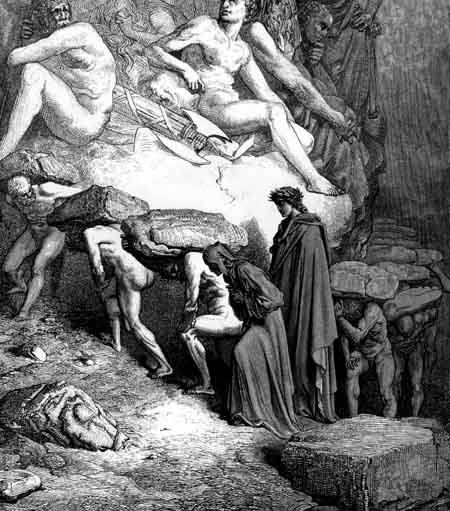

Canto XIOs orgulhosos - Espíritos de Omberto,
|
|  |
| Os orgulhosos carregando seus pecados nas costas. Nas paredes, as esculturas do látego do orgulho. Ilustração de Gustave Doré (século XIX). |
- Pai nosso, que estás nos céus, não circunscrito, mas pelo maior amor que dás às tuas criações primeiras, louvado seja o teu nome e teu valor, por toda criatura, assim como damos graças ao teu doce vapor. Que venha a nós, a paz do teu reino. Dá-nos hoje, o maná de cada dia, sem a qual, neste áspero deserto, retrocede quem mais avançar deseja. E assim como perdoamos aqueles que nos causaram mal, nos perdoa tu também, benigno, sem olhar o nosso mérito. Não deixes que nossa virtude fraca caia na tentação do antigo adversário, mas liberta-nos de suas garras. Este último pedido, senhor, não fazemos para nós, que não carecemos, mas para os que ainda em baixo permanecem.
Assim, orando para o bem deles e para o nosso, pela primeira cornija as almas passavam, lentamente, atrasadas pelo peso que as oprimia de forma desigual. Se eles sempre oram por nosso bem, o que podem fazer por eles, os vivos cujas orações estão plantadas no bem? Devemos, veramente, ajudá-los para que lavem as máculas que trouxeram da Terra, para que limpos e leves possam subir pela esfera estrelada.
- Para que a justiça e piedade vos liberte logo de vossa carga - falou Virgílio -, mostrai-nos o menor caminho até a escada ou, se houver mais de uma, para aquela que oferece menor dificuldade para subir. Este que está comigo ainda tem a carne de Adão, e isto, contra sua vontade, atrasa-lhe a viagem.
- À direita, rente à costa - falou um deles - encontrarás uma estrada que pode ser escalada por uma pessoa viva. Se eu não estivesse impedido por esta pedra, que me força a olhar somente para o chão, eu iria querer saber se conheço esse homem vivo, e fazer com que ele tenha piedade da minha pena. Fui um latino de família nobre. Meu pai foi Guglielmo Aldobrandesco. Não sei se já ouviste falar dele. O antigo sangue e as grandes obras de meus avós me tornaram uma pessoa arrogante e, esquecendo o amor da mãe comum, eu desprezava tanto os outros que isto me levou à morte, como toda Siena sabe, em Compagnatico. Eu sou Omberto. O pecado do orgulho não arruinou só a mim, mas toda a minha família. Por isso devo carregar este peso, que recusei em vida, até o dia em que Deus estiver satisfeito.
Eu o escutava abaixado quando um outro me viu, me reconheceu e me chamou. Ele se esforçava para manter o olhar fixo em mim enquanto andava.
- Oh! - disse eu - Não és tu Oderisi, grande artista e honra daquela arte que em Paris chamam de iluminura?
- Irmão - disse ele - as páginas pintadas pelo Franco bolonhês são muito mais alegres. É dele, agora, a honra toda. Pouco cortês teria eu sido a ele, devo admitir, se eu estivesse vivo, pois meu único desejo então era a excelência. Por tal soberba aqui se paga o preço. Eu nem estaria aqui se, quando ainda podia pecar, não tivesse voltado para Deus. Ó glória vã de toda a posse humana! Antes Cimabue era o maior pintor. Agora Giotto ofusca seu brilho. Vem um Guido e tira do outro toda a sua glória poética, e talvez já tenha chegado aquele que os dois afastará do ninho da fama. A fama do mundo não é mais que uma rajada de vento que muda de nome quando muda de lado. O que será da tua fama daqui a mil anos? O que são dez séculos para a eternidade? Menos que um piscar de olhos comparado com o giro da mais lenta das esferas. Esse, que aí na frente vai tão devagar, tinha toda a fama na Toscana e hoje mal se ouve seu nome em Siena, onde ele um dia foi senhor e conseguiu destruir a fúria de Florença. A fama terrena é como o verde da erva, que vem e vai. O Sol que a faz viver é o mesmo Sol que depois a descolora.
- Tuas palavras verdadeiras honram a justa humildade e condenam a soberbia - respondi -, mas quem é aquele do qual falaste agora?
- É Provenzano Salvani - disse - e ele está aqui porque teve a pretensão de ter toda Siena em suas mãos.
- Mas - perguntei - se toda alma que só se arrepende no último momento fica esperando lá embaixo a menos que receba boas preces, como é que ele conseguiu esta graça?
- Quando ele estava no seu apogeu - disse Oderisi - ele se humilhou por um amigo, que cumpria pena na cadeia de Carlos. Colocando de lado toda a vergonha para resgatar o amigo da prisão, ele pediu esmolas aos que passavam na praça de Siena. Foi esse ato que o libertou da espera.